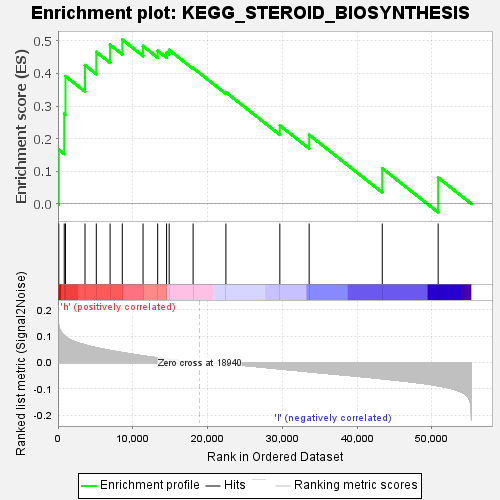
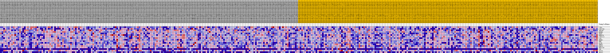
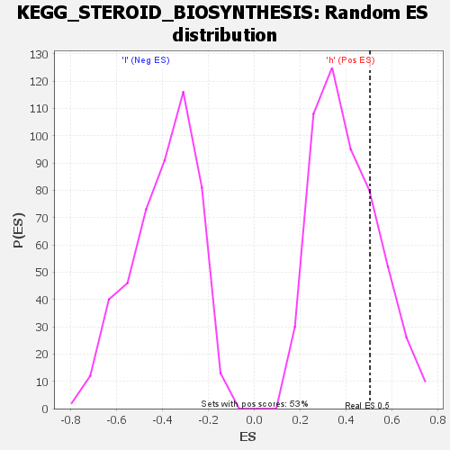

| | | Dataset | VCAN.VCAN.cls#h_versus_l.VCAN.cls#h_versus_l_repos |
| Phenotype | VCAN.cls#h_versus_l_repos |
| Upregulated in class | h |
| GeneSet | KEGG_STEROID_BIOSYNTHESIS |
| Enrichment Score (ES) | 0.50367856 |
| Normalized Enrichment Score (NES) | 1.256159 |
| Nominal p-value | 0.2338403 |
| FDR q-value | 0.9155633 |
| FWER p-Value | 0.969 |
Table: GSEA Results Summary

Fig 1: Enrichment plot: KEGG_STEROID_BIOSYNTHESIS
Profile of the Running ES Score & Positions of GeneSet Members on the Rank Ordered List
| SYMBOL | TITLE | RANK IN GENE LIST | RANK METRIC SCORE | RUNNING ES | CORE ENRICHMENT | | 1 | LIPA | na | 106 | 0.138 | 0.1662 | Yes |
| 2 | CYP27B1 | na | 833 | 0.101 | 0.2760 | Yes |
| 3 | TM7SF2 | na | 1003 | 0.097 | 0.3914 | Yes |
| 4 | NSDHL | na | 3611 | 0.067 | 0.4253 | Yes |
| 5 | SQLE | na | 5122 | 0.056 | 0.4659 | Yes |
| 6 | DHCR24 | na | 6965 | 0.045 | 0.4878 | Yes |
| 7 | CYP51A1 | na | 8597 | 0.037 | 0.5037 | Yes |
| 8 | LSS | na | 11372 | 0.025 | 0.4839 | No |
| 9 | MSMO1 | na | 13325 | 0.017 | 0.4697 | No |
| 10 | EBP | na | 14518 | 0.013 | 0.4640 | No |
| 11 | SC5D | na | 14865 | 0.012 | 0.4720 | No |
| 12 | DHCR7 | na | 18064 | 0.002 | 0.4168 | No |
| 13 | FDFT1 | na | 22449 | -0.004 | 0.3422 | No |
| 14 | HSD17B7 | na | 29661 | -0.024 | 0.2405 | No |
| 15 | CEL | na | 33582 | -0.035 | 0.2116 | No |
| 16 | SOAT1 | na | 43356 | -0.061 | 0.1089 | No |
| 17 | SOAT2 | na | 50831 | -0.088 | 0.0803 | No |
Table: GSEA details [plain text format]

Fig 2: KEGG_STEROID_BIOSYNTHESIS
Blue-Pink O' Gram in the Space of the Analyzed GeneSet

Fig 3: KEGG_STEROID_BIOSYNTHESIS: Random ES distribution
Gene set null distribution of ES for KEGG_STEROID_BIOSYNTHESIS